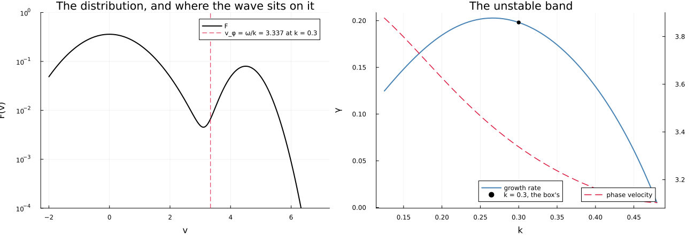
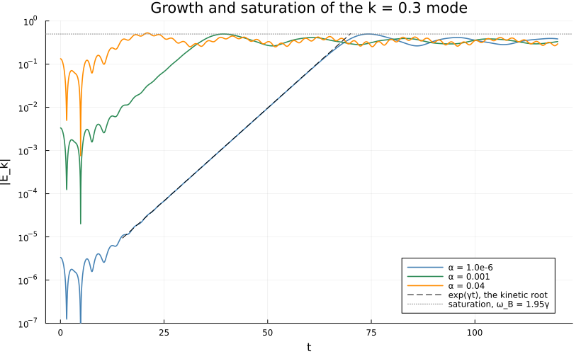
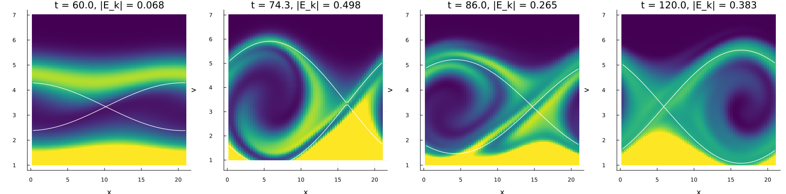
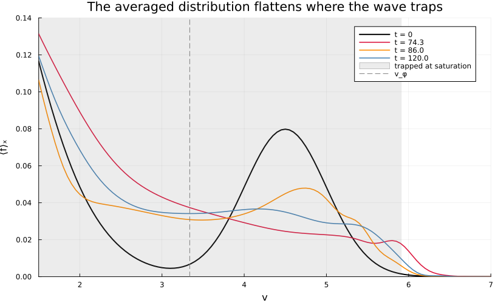

The bump-on-tail instability
Its growth rate, and what trapping does with it.
julia --project=verification verification/bump-on-tail.jlA beam on the tail of a Maxwellian, as Arber and Vann set it up [J. Comput. Phys. 180, 339 (2002)]:
F(v) = [0.9·exp(−v²/2) + 0.2·exp(−2(v − 4.5)²)]/√(2π)over one wavelength of k = 0.3. A Langmuir wave travelling with the beam, its phase velocity on the beam's rising flank, takes energy from the beam and grows – the beam-plasma instability, which at this beam's temperature is mostly reactive, a cold beam growing 18% faster – until it is deep enough to trap the particles feeding it. Then the trapped beam swings round the bottom of the wave's potential well, the field swings with it, and the averaged distribution loses the slope the growth ran on.
bump_on_tail, mode_rates and bump_on_tail_root come from test/verification_harness.jl and test/dispersion.jl, and test/test_verification.jl asserts what this script draws.
using Plots
using Vasilek
include(joinpath(pkgdir(Vasilek), "test", "verification_harness.jl"))
here = @__DIR__
k = 0.3
ωc = bump_on_tail_root(k)
vφ = real(ωc)/k3.337392978770397Where the wave sits, and how fast it grows
The phase velocity of the growing root lands on the flank of the bump, between the valley and the beam's centre, and across the unstable band it stays there: from 3.9 at k = 0.125 down to 3.104 where the band closes, at k = 0.4824 – the bottom of the valley, the minimum of F, where Penrose's criterion puts a marginal mode.
v = collect(-2.0:0.01:7.0)
F = @. (0.9*exp(-v^2/2) + 0.2*exp(-2*(v - 4.5)^2))/sqrt(2π)
fplot = plot(v, F; yscale = :log10, ylims = (1e-4, 1), xlabel = "v", ylabel = "F(v)",
label = "F", color = :black, linewidth = 2,
title = "The distribution, and where the wave sits on it")
vline!(fplot, [vφ]; color = :crimson, linestyle = :dash,
label = "v_φ = ω/k = $(round(vφ; digits = 3)) at k = 0.3")
ks = 0.125:0.005:0.48
roots = bump_on_tail_root.(ks)
band = plot(ks, imag.(roots); xlabel = "k", ylabel = "γ", label = "growth rate",
color = :steelblue, linewidth = 2, legend = :bottom,
title = "The unstable band")
plot!(twinx(band), ks, real.(roots) ./ ks; ylabel = "v_φ", label = "phase velocity",
color = :crimson, linestyle = :dash, linewidth = 1.5, legend = :bottomright)
scatter!(band, [k], [imag(ωc)]; color = :black, label = "k = 0.3, the box's")
savefig(plot(fplot, band; layout = (1, 2), size = (1300, 440), left_margin = 4Plots.mm,
bottom_margin = 5Plots.mm),
joinpath(here, "bump-on-tail-dispersion.png"));
Growth and saturation, from three seeds
At 1e-6 the mode grows for 74 time units at the kinetic root's rate; at 1e-3 it does the same thing ln(1000)/γ earlier and saturates at the same amplitude; at Arber and Vann's 0.04 it starts a quarter of the way to saturation, and the growth is lost in the beat with the backward wave the same seed launches.
seeds = (1e-6, 1e-3, 0.04)
runs = Dict(α => bump_on_tail(α = α, tmax = 120.0) for α in seeds)
growth = plot(yscale = :log10, xlabel = "t", ylabel = "|E_k|", legend = :bottomright,
title = "Growth and saturation of the k = 0.3 mode", size = (820, 500),
ylims = (1e-7, 1))
for (α, color) in zip(seeds, (:steelblue, :seagreen, :darkorange))
r = runs[α]
plot!(growth, r.t, abs.(r.E); label = "α = $α", color = color, linewidth = 1.6)
end
base = runs[1e-6]
γ, ω = mode_rates(base.t, base.E; tmin = 30.0, tmax = 50.0)
i30 = findfirst(≥(30.0), base.t)
tt = range(15.0, 70.0; length = 50)
plot!(growth, tt, abs(base.E[i30]) .* exp.(imag(ωc) .* (tt .- base.t[i30]));
color = :black, linestyle = :dash, label = "exp(γt), the kinetic root")
A = abs.(base.E)
isat = argmax(A)
hline!(growth, [A[isat]]; color = :gray, linestyle = :dot,
label = "saturation, ω_B = $(round(sqrt(k*A[isat])/imag(ωc); digits = 2))γ")
savefig(growth, joinpath(here, "bump-on-tail-growth.png"));
println("k = 0.3: root ω = ", round(real(ωc); digits = 6), ", γ = ", round(imag(ωc); digits = 6),
"; measured over t ∈ [30, 50] at α = 1e-6: ω = ", round(ω; digits = 5),
", γ = ", round(γ; digits = 5))
for α in seeds
r = runs[α]
a = abs.(r.E)
i = argmax(a)
println(" α = ", rpad(α, 6), " |E_k| starts at ", round(a[1]; sigdigits = 4),
", peaks at ", round(a[i]; digits = 4), " at t = ", round(r.t[i]; digits = 2))
endk = 0.3: root ω = 1.001218, γ = 0.198098; measured over t ∈ [30, 50] at α = 1e-6: ω = 1.00108, γ = 0.19784
α = 1.0e-6 |E_k| starts at 3.328e-6, peaks at 0.4979 at t = 74.32
α = 0.001 |E_k| starts at 0.003328, peaks at 0.4981 at t = 39.32
α = 0.04 |E_k| starts at 0.1331, peaks at 0.5281 at t = 20.98
Phase space
The beam's side of it at four times: growing, at the saturation peak, at the field's first minimum, and at t = 120. The white line is the separatrix of a wave of the measured amplitude and phase, v = vᵩ ± √(2|Eₖ|(1 + sin(kx + θ))/k): the particles inside it are trapped, and the vortex they make is what carries the field once the growth stops.
snapshots = (60.0, 74.3, 86.0, 120.0)
panels = []
for s in snapshots
r = bump_on_tail(α = 1e-6, tmax = s)
E = r.E[end]
window = findall(u -> 1.0 ≤ u ≤ 7.0, r.v)
# The colour range is the beam's: the bulk at v = 1 is nearly three times
# brighter and would leave the vortex in the dark.
p = heatmap(r.x, r.v[window], r.r.f[window, :]; xlabel = "x", ylabel = "v",
color = :viridis, clims = (0.0, 0.09), colorbar = false,
title = "t = $s, |E_k| = $(round(abs(E); digits = 3))")
sep = @. sqrt(2abs(E)*(1 + sin(k*r.x + angle(E)))/k)
plot!(p, r.x, vφ .+ sep; color = :white, linewidth = 1.2, label = "")
plot!(p, r.x, vφ .- sep; color = :white, linewidth = 1.2, label = "")
push!(panels, p)
end
savefig(plot(panels...; layout = (1, 4), size = (1700, 420), left_margin = 4Plots.mm,
bottom_margin = 6Plots.mm),
joinpath(here, "bump-on-tail-phase-space.png"));
The plateau
Averaged over x, f loses the positive slope between vᵩ and the beam's centre: trapping stirs the resonant particles across the phase velocity, as quasilinear theory's plateau does for a spectrum of waves. It breathes with the trapping oscillation – the bump partly re-forms when the trapped beam climbs back above vᵩ – which is why the test holds it to the worst of the swing rather than to one time.
plateau = plot(xlabel = "v", ylabel = "⟨f⟩ₓ", legend = :topright, size = (820, 500),
title = "The averaged distribution flattens where the wave traps",
xlims = (1.5, 7), ylims = (0, 0.14))
g₀ = vec(sum(base.f₀; dims = 2))/size(base.f₀, 2)
plot!(plateau, base.v, g₀; label = "t = 0", color = :black, linewidth = 2)
for (s, color) in zip(snapshots[2:end], (:crimson, :darkorange, :steelblue))
r = bump_on_tail(α = 1e-6, tmax = s)
plot!(plateau, r.v, vec(sum(r.r.f; dims = 2))/size(r.r.f, 2); label = "t = $s",
color = color, linewidth = 1.6)
end
width = 2sqrt(A[isat]/k)
vspan!(plateau, [vφ - width, vφ + width]; color = :gray, alpha = 0.15,
label = "trapped at saturation")
vline!(plateau, [vφ]; color = :gray, linestyle = :dash, label = "v_φ")
savefig(plateau, joinpath(here, "bump-on-tail-plateau.png"));
This page was generated using Literate.jl.